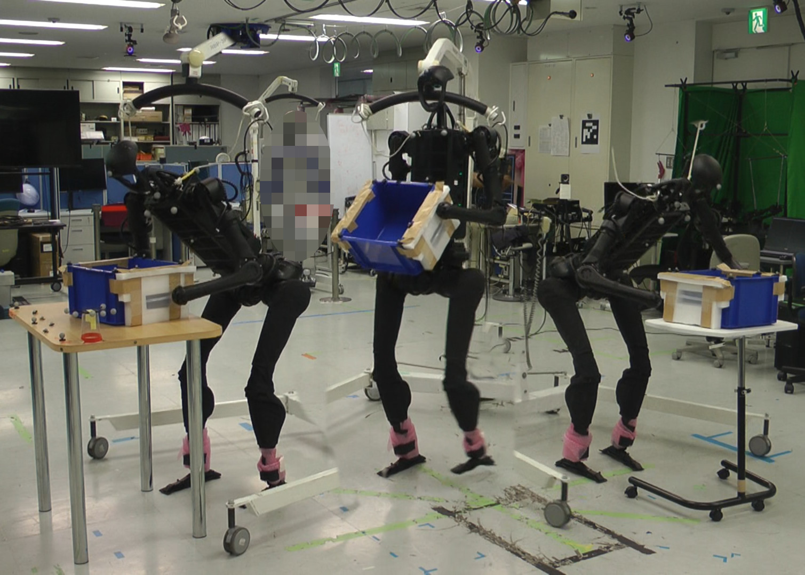
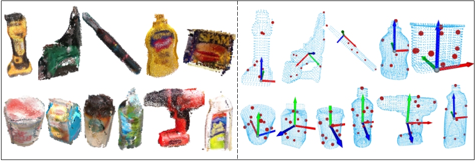
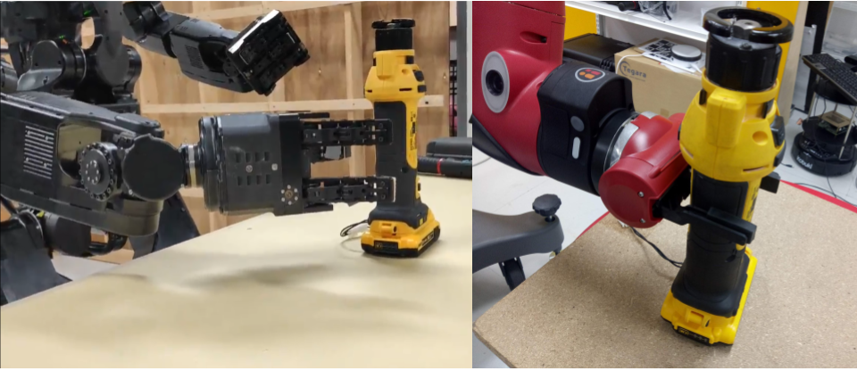
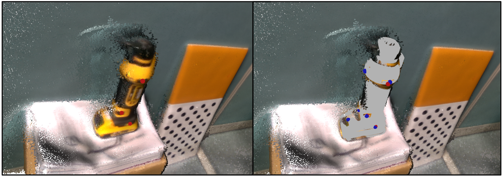
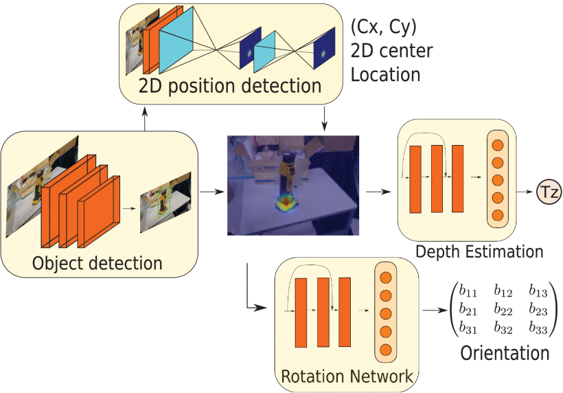

twitter /
github /
scholar /
linkedin /
lab
email:
rohan565singh[at]gmail.com
|
Times Square, NYC . |
Hi, I am a Research Scientist at Fauna Robotics in the US, currently living in Brooklyn. Previously, I was a postdoctoral researcher at the CNRS-AIST Joint Robotics Lab (JRL) in Tsukuba, Japan. I earned a Ph.D. from the University of Tsukuba in April 2024, focusing on reinforcement learning for humanoid locomotion, and an MS in April 2021, focusing on 6-DoF object pose estimation for grasping and manipulation. I worked at JRL from October, 2017 to March, 2025, first as a full-time robotics engineer, then as a Research Assistant (RA), and finally as a Postdoctoral researcher. During my graduate studies, I was extremely fortunate to be mentored and advised by Fumio Kanehiro sensei. If you are an acquaintance, a friend, a former coworker, or know me even remotely, I'm open to your (anonymous) feedback. |
{kind=link}
|
My Ph.D. research focussed on developing reinforcement learning based controllers for practical applications of real humanoid robots. This is challenging in several ways, some of which are due to the large size and high joint friction of robots like the HRP-5P. For my master's, I worked on robotic perception and grasping - using CNNs and stacked-hourglass networks for 6-DoF pose estimation, with minimal human effort involved in data labelling and 3D modelling. I'm also proud to have worked at UAS-DTU during my undergrad in New Delhi. It's a fun, yet an exceptionally passionate and hardworking group of student engineers. Go check them out! |
|
|
| 14 Jan, 2026 |
Our paper "Expert-Guided Imitation for Learning Humanoid Loco-Manipulation from Motion Capture" was selected as a |
| 28 Apr, 2025 |
I joined Fauna Robotics as a Research Scientist! |
| 6 Dec, 2024 |
I gave a talk at Tokyo AI - AI in Hardware and Robotics on "How to train your humanoid". |
| 27 Nov, 2024 |
I gave a talk at the Dynamic Legged Systems (DLS) lab at IIT Genoa, Italy about my postdoc research on multi-contact humanoid locomotion, and sim-to-real methods. |
| 26 Nov, 2024 |
I visited the Robotic Systems Lab (RSL) at ETH Zurich, Switzerland. |
| 25 Nov, 2024 |
I gave a talk at the Computational Robotics Lab (CRL) lab at ETH Zurich, Switzerland about my past research on bipedal locomotion using reinforcement learning. |
| 12 Nov, 2024 |
I attended the Trilateral AI Conference 2024. Generative AI: Pathways to Democratization, Transparency and Sustainability. |
| 16 May, 2024 |
I presented my research at the ICRA 2024: Late Breaking Results Poster Session! |
| 1 Apr, 2024 |
I started as a Postdoctoral researcher at CNRS-AIST JRL under Mitsuharu Morisawa! |
| 5 Mar, 2024 |
I gave a talk (remotely) at the Gepetto group, LAAS-CNRS, France. |
| 5 Feb, 2024 |
Today, I successfully defended my Ph.D. thesis! Thanks to the jury members: Olivier Stasse, Eiichi Yoshida, Jun Izawa, Ryusuke Sagawa. |
| 5 Oct, 2023 |
I gave a talk at the humanoids team in Toyota Motor Corporation, Future Creation Center, Suidobashi, Tokyo |
| 1 Nov, 2021 |
I was awarded the prestigious and generous JST SPRING Fellowship! The fellowship period is 2021/10/01 ~ 2024/03/31! |
| 16 Feb, 2021 |
I was awarded the Excellent Master's Thesis Award (優秀修士論文賞)! |
|  |
|

|
|

|
|

|
|

|
|
|  |
|
|  |
|
|  |
|
|  |
|
|
|
|
|
|
|
|
|
|